Wybierz, co nagrać
Choose what to record
Ekran, okno albo obszar. Włącz mikrofon i kamerę, ustaw jakość i odliczanie.
Screen, window or area. Turn on the microphone and camera, set the quality and countdown.
Nagraj ekran ze swoją twarzą w rogu, a potem – bez osobnego edytora – przytnij, wykadruj, przyspiesz i dodaj napisy. Gotowy film zapiszesz jako MP4 albo lekką animację do wklejenia w dokumentację czy na czat. Za darmo i bez znaku wodnego.
Record your screen with your face in the corner, then – without a separate editor – trim, crop, speed it up and add subtitles. Save the result as an MP4 or a lightweight animation to drop into docs or a chat. Free and watermark-free.
Darmowy · bez znaku wodnego · bez rejestracji · bez limitu czasu
Free · no watermark · no sign-up · no time limit
Nagrywanie i edycja w tym samym miejscu – bez przenoszenia plików do osobnego programu.
Recording and editing in one place – no moving files to a separate program.
Tutorial, recenzja albo prezentacja z Twoją twarzą w rogu. Włącz kamerę, a obok okna otworzy się podgląd na tle nagrywanego obszaru: przeciągnij obraz w docelowe miejsce, zmień rozmiar, wybierz koło lub prostokąt, ramkę i lustrzane odbicie – zmiany widać od razu.
A tutorial, a review or a presentation with your face in the corner. Switch the camera on and a live preview opens next to the window, over the area you record: drag the picture into place, resize it, choose a circle or a rectangle, a border and mirroring – changes show up instantly.
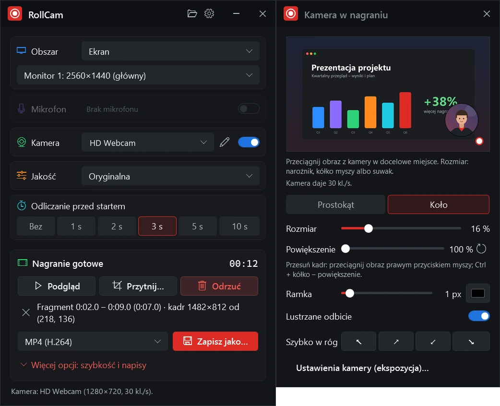
Wiele osób ogląda filmy bez dźwięku. Dodaj napisy z pliku SRT, ASS albo WebVTT, wybierz czcionkę, rozmiar, kolor i tło – a RollCam wtopi je w obraz, więc wyświetlą się wszędzie, także w mediach społecznościowych.
Lots of people watch videos with the sound off. Add subtitles from an SRT, ASS or WebVTT file, pick the font, size, colour and background – RollCam burns them into the picture, so they show up everywhere, social media included.
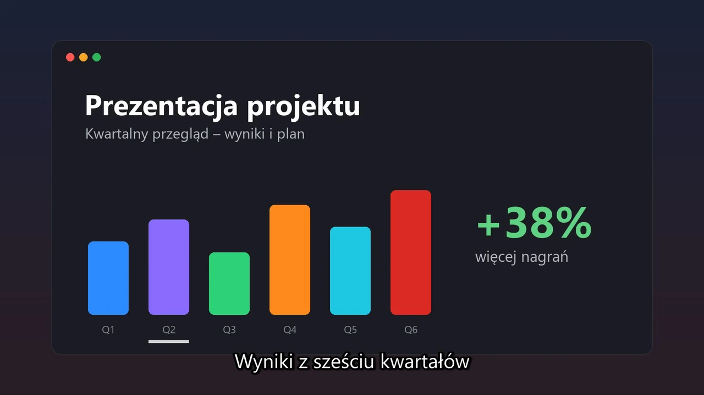
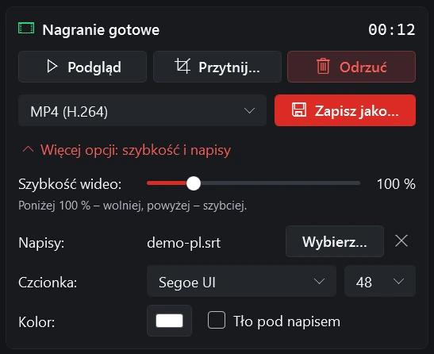
Od wyboru obszaru, przez pauzy bez przerw w nagraniu, po przycinanie przed zapisem.
From picking the area, through pauses with no gaps, to trimming before you save.
Cały monitor, okno konkretnej aplikacji albo obszar zaznaczony myszą. Okno nagrywa się także wtedy, gdy inne programy pokazują zamiast niego czarny ekran. Czerwona ramka pokazuje, co trafia do nagrania – ale widzisz ją tylko Ty, w filmie jej nie ma.
The whole monitor, one app’s window or an area you drag with the mouse. Windows record properly even where other tools show a black screen. A red frame shows what’s being recorded – only you see it, it never ends up in the video.
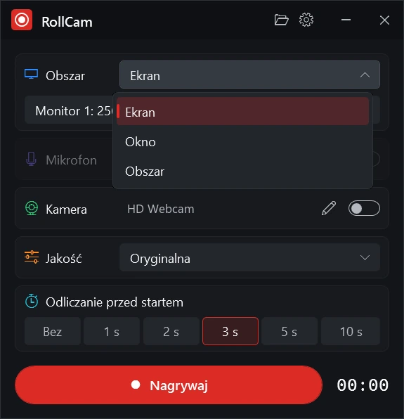
Utnij nieudany początek i koniec, a przeciągnięciem myszą po obrazie wybierz kadr – np. tylko fragment ekranu do krótkiego klipu. Zmień szybkość od 25 do 400 %, a przed zapisem obejrzyj wynik w odtwarzaczu.
Cut a bad start and end, and drag over the picture to crop it – e.g. just one part of the screen for a short clip. Change the speed from 25 to 400 % and watch the result in the player before saving.
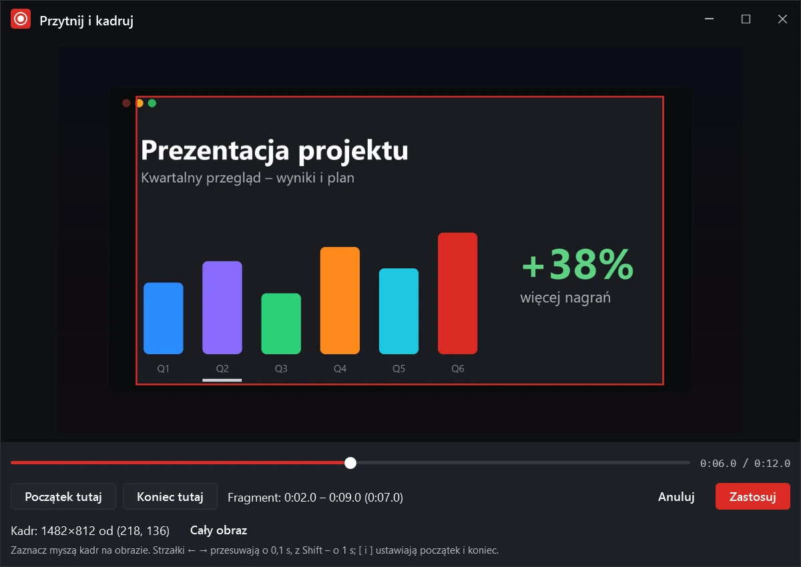
Zatrzymaj się, uporządkuj okna i wznów – fragmenty z pauzy znikają z nagrania same, bez montażu. Pauzujesz i kończysz klawiszem z dowolnego programu albo z ikony w zasobniku.
Stop for a moment, tidy up your windows and resume – the paused parts disappear from the video by themselves, no editing needed. Pause and stop with a key from any app or from the tray icon.
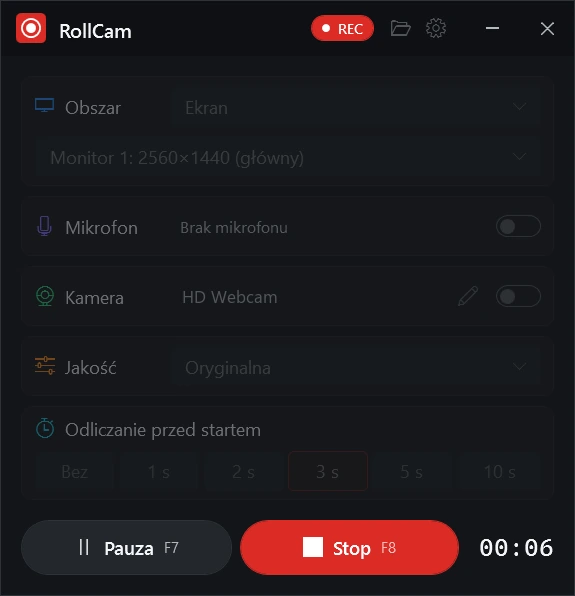
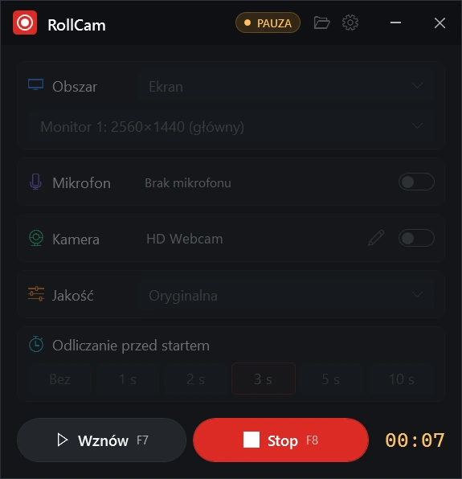
Płynne 30 klatek na sekundę także na monitorach 1440p. Nagranie zaczyna się dokładnie po odliczaniu – nic nie ucieka z początku, a kamera nie zwalnia, nawet gdy komputer ma dużo pracy.
A smooth 30 frames per second, even on 1440p monitors. Recording starts exactly after the countdown – nothing is lost at the start, and the camera doesn’t slow down even when your PC is busy.
RollCam bierze mikrofon ustawiony w Windows, a z listy wybierzesz inny. Słuchawki Bluetooth podłączone w trakcie pojawiają się same. Gdyby głos minimalnie wyprzedzał ruch ust, dostroisz go suwakiem.
RollCam uses the microphone set in Windows, and you can pick another one from the list. Bluetooth headsets connected along the way show up by themselves. If your voice ever runs slightly ahead of your lips, fine-tune it with a slider.
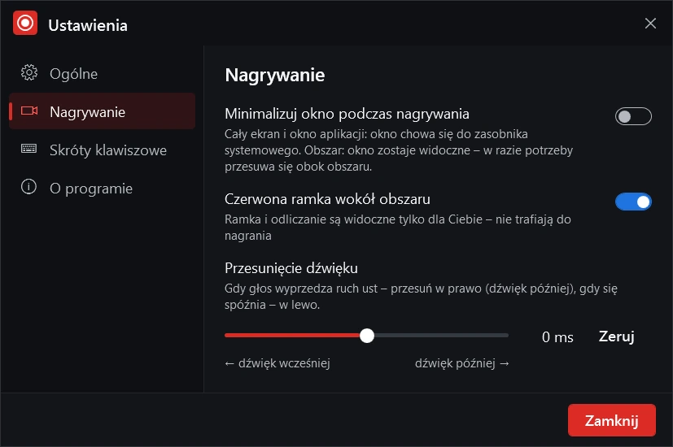
Ekran, okno albo obszar. Włącz mikrofon i kamerę, ustaw jakość i odliczanie.
Screen, window or area. Turn on the microphone and camera, set the quality and countdown.
Po odliczaniu nagranie startuje dokładnie po „1”. Pauza i stop – przyciskiem, skrótem klawiszowym albo z zasobnika.
After the countdown, recording starts right after “1”. Pause and stop with the buttons, a hotkey or from the tray.
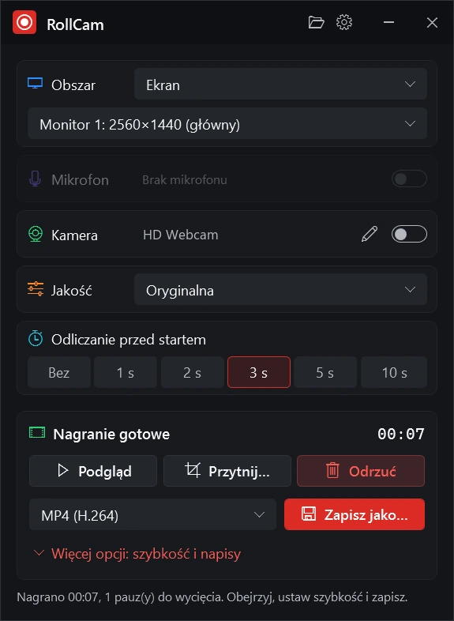
Obejrzyj podgląd, przytnij, wybierz format i kliknij „Zapisz jako…”. Gotowe.
Watch the preview, trim, pick a format and click “Save as…”. Done.
Filmy z dźwiękiem albo animacje bez dźwięku – w oryginalnej rozdzielczości albo zmniejszone do 1080p, 720p, 480p lub 360p.
Videos with sound or silent animations – at the original resolution or scaled down to 1080p, 720p, 480p or 360p.
Ustaw 2–30 klatek na sekundę, powtarzanie i efekt „tam i z powrotem”. „Pomijaj nieruchome fragmenty” zostawia jedną klatkę wyświetlaną dłużej, gdy obraz stoi – plik jest dużo mniejszy.
Set 2–30 frames per second, looping and a back-and-forth effect. “Skip still parts” keeps a single, longer frame while the picture doesn’t change – for a much smaller file.
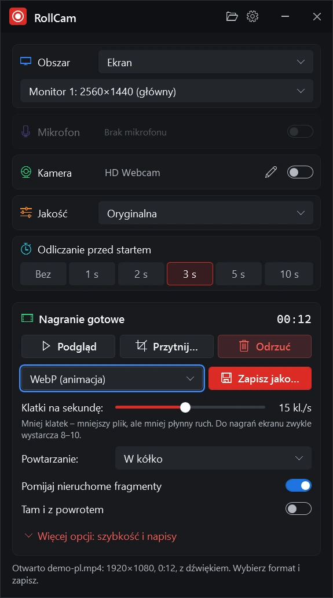
Jeden instalator, bez uprawnień administratora. Resztą RollCam zajmuje się sam.
One installer, no admin rights needed. RollCam takes care of the rest.
Potrzebne kodeki wideo RollCam pobiera sam przy pierwszym uruchomieniu – nic nie trzeba doinstalowywać ani ustawiać.
RollCam downloads the video codecs it needs on first launch – nothing to install or set up.
Nowa wersja pobiera się sama i instaluje przy następnym uruchomieniu – nigdy w trakcie nagrywania.
New versions download by themselves and install on the next launch – never while you record.
Zamknięcie aplikacji w trakcie nagrywania zapisuje je w folderze nagrań, a przy niezapisanym nagraniu RollCam zawsze pyta.
Closing the app mid-recording saves it to your recordings folder, and an unsaved recording always asks first.
Język ustawia się jak w Windows, a zmienisz go w ustawieniach. Tam też wybierzesz folder nagrań, skróty klawiszowe i opcje nagrywania.
The language follows Windows and you can change it in Settings – along with the recordings folder, hotkeys and recording options.
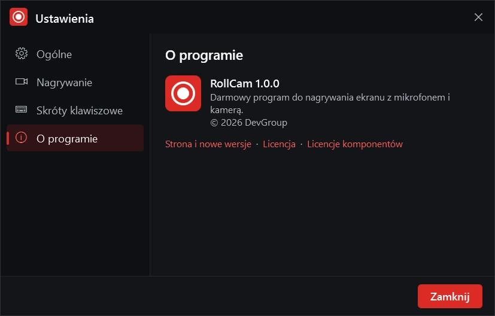
Tutoriale, recenzje i reakcje z twarzą w rogu, napisy dla oglądających bez dźwięku i krótkie, przyspieszone klipy.
Tutorials, reviews and reactions with your face in the corner, subtitles for viewers watching on mute, and short sped-up clips.
Lekcje i instrukcje z prowadzącym w kadrze; pauzy na przygotowanie przykładu znikają z nagrania same.
Lessons and how-tos with the teacher in the picture; pauses to prepare an example disappear from the video by themselves.
Krótki WebP albo GIF wykadrowany na problem – wklejasz prosto do zgłoszenia lub dokumentacji.
A short WebP or GIF cropped to the problem – paste it straight into a ticket or the docs.
Zamiast spotkania – nagranie z głosem, przyspieszone do 150 %, żeby szanować czas odbiorców.
Instead of a meeting – a voice recording, sped up to 150 % to respect everyone’s time.
Uruchom nagrywanie skrótem, z harmonogramu zadań albo ze skryptu. RollCam.exe przyjmuje źródło, mikrofon, kamerę i czas nagrania, a z --output zapisuje wynik bez pytania. Tą samą drogą przekonwertujesz gotowy film na GIF, WebP czy MP4 z napisami.
Start a recording from a shortcut, the Task Scheduler or a script. RollCam.exe takes the source, microphone, camera and duration, and with --output saves the result without asking. The same way you can turn an existing video into a GIF, WebP or an MP4 with subtitles.
Pełna lista opcji: RollCam.exe --help
All options: RollCam.exe --help
:: Monitor 1, mikrofon i kamera, 60 s, zapis do MP4 RollCam.exe --record --screen 1 --mic --camera --duration 60 --output demo.mp4 :: Okno aplikacji bez odliczania – stop klawiszem F8 RollCam.exe --record --window "Notatnik" --countdown 0 :: Gotowy film: 2× szybciej, 720p, animacja WebP RollCam.exe film.mov --speed 200 --quality 720 --output film.webp :: Napisy wtopione w obraz RollCam.exe film.mp4 --subtitles napisy.srt --output film-napisy.mp4
:: Monitor 1, microphone and camera, 60 s, save as MP4 RollCam.exe --record --screen 1 --mic --camera --duration 60 --output demo.mp4 :: An app window, no countdown – stop with F8 RollCam.exe --record --window "Notepad" --countdown 0 :: Existing video: 2× faster, 720p, WebP animation RollCam.exe film.mov --speed 200 --quality 720 --output film.webp :: Burned-in subtitles RollCam.exe film.mp4 --subtitles subs.srt --output film-subs.mp4
Ekran, mikrofon i kamera w jednym kliknięciu – a potem przycinanie, napisy i eksport do sześciu formatów.
Screen, microphone and camera in one click – then trimming, subtitles and export to six formats.
RollCam działa na komputerach z Windows 10 i 11. Wyślij sobie link i pobierz program na komputerze.
RollCam runs on Windows 10 and 11 PCs. Send yourself the link and download it on your computer.
RollCam-win-Setup.exe · ok. 10 MB · Windows 10/11
RollCam-win-Setup.exe · about 10 MB · Windows 10/11